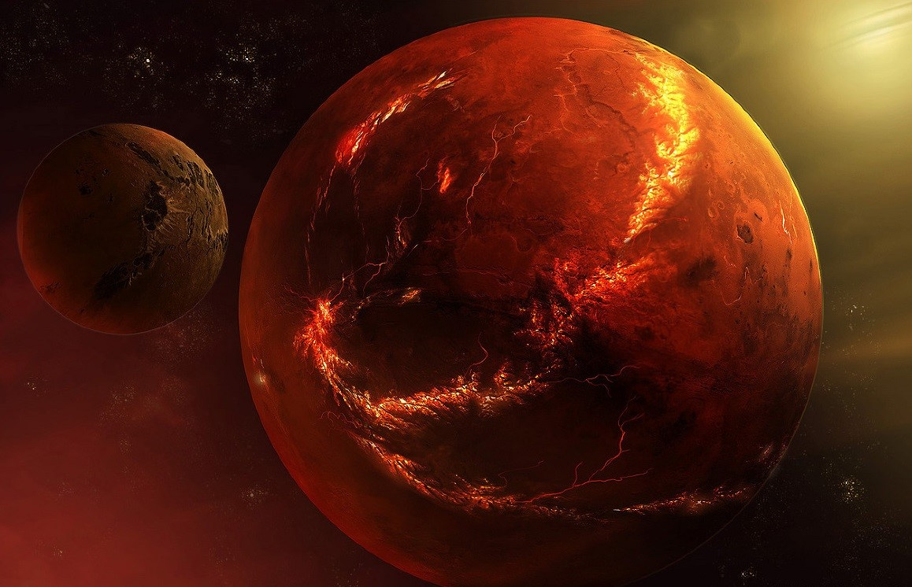

Марс
В свое время Марс был кандидатом номер один в обитаемые объекты Солнечной системы. Он гораздо меньше Земли: по массе Марс в десять раз уступает нашей планете. У него есть атмосфера, но она очень разреженная. Именно поэтому на поверхность Марса так трудно спускать аппараты.
Вернуться на главную